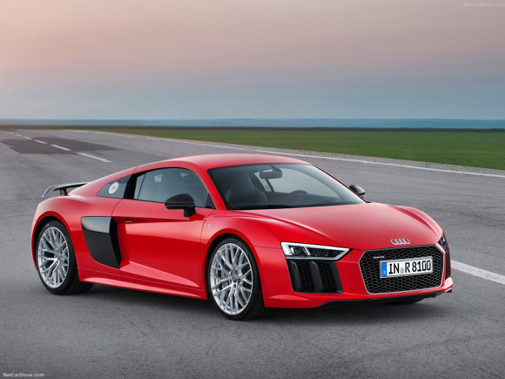

Audi R8 V10 Plus (2016)
Specifications
Power: 610 hp
Torque: 560 Nm
0 to 100 kph: 3.2 s
Top Speed: 330 kph
Weight: 1623 kg
Vehicle Type:
mid engine, 4 wheel drive, 2 passenger, 2 door coupe
Engine:
Type: V10
Transmission:7 speed S tronic dual clutch automatic with manual shifting mode
Price: £137,500
Related Links
Official site
More info @ wikipedia
Wallpapers
Youtube
Reviews
N/A
- 

{kind=link}
{kind=link}
{kind=link}
{kind=link}
{kind=link}
{kind=link}
{kind=link}
{kind=link}
{kind=link}
{kind=link}
{kind=link}
{kind=link}
{kind=link}
{kind=link}
{kind=link}
{kind=link}
{kind=link}
{kind=link}
{kind=link}
{kind=link}
No model with the four rings is closer to motorsport, none is more striking and more dynamic: at the 2015 Geneva Motor Show, Audi is presenting the second generation of its high-performance R8 sports car. The V10 mid-engine and a newly developed quattro drive ensure breathtaking driving performance, especially in the top-of-the-range version with 449 kW (610 hp): achieving 0 to 100 km/h (62.1 mph) in just 3.2 seconds, its top speed is 330 km/h (205.1 mph).
A high-revving mid-engine with superior performance, a consistently lightweight construction concept and an extremely dynamic chassis with quattro drive system and fully variable torque control - this is what makes the R8 the sporty spearhead of Audi. The high-performance sports car has been newly developed from the ground up - it is more taut, more striking and more fascinating both on the race track and on the road.
"Motorsport is in Audi's genes, it has always been a permanent feature of our brand's character," says Prof. Dr. Ulrich Hackenberg, Board Member for Technical Development at Audi. "With the new Audi R8, our engineers are bringing accumulated racing expertise from the race track onto the road. No other model of ours evokes more dynamic emotion. The new R8 V10 plus is therefore the most powerful and fastest series-production Audi of all time." Thanks to the close cooperation between racing engineers, racing drivers and developers, the Audi R8 has seen a clear performance increase - this benefits both the series production car and the R8 LMS developed on the basis of this.
The engines: 10 cylinders in two versions
The 5.2 FSI is available in two versions: one with 397 kW (540 hp) and another sporting 449 kW (610 hp). The range-topping model accelerates in a mere 3.2 seconds from 0 to 100 km/h (62.1 mph) and keeps going to its maximum speed of 330 km/h (205.1 mph). The sound of the freely aspirated V10 engine, whose maximum torque is available at 6,500 rpm, has become even fuller and sharper. A 7-speed S tronic transmission and a newly developed quattro drive system transmit the power to the road. The distribution of the drive torque adapts to the respective driving conditions - in extreme cases, 100 percent of the torque can be transmitted to the front or rear axle. The new performance mode in the Audi drive select dynamic handling system enables adaptation of the most important ride dynamics parameters to the friction coefficient of the road.
Lightweight construction: only 1,454 kg (3,205.5 lb) dry weight
The top model R8 V10 plus has a dry weight of 1,454 kilograms (3,205.5 lb). Despite a lot of extra equipment and greater rigidity, the new Audi R8 weighs up to 50 kilograms (110.2 lb) less than its predecessor. The multimaterial Audi Space Frame (ASF) ensures low weight and optimum axle load distribution. The combination of aluminum and carbon fiber reinforced plastics (CFRP) in the Audi Space Frame opens up new dimensions with regard to weight, rigidity and crash behavior. The aerodynamic underbody which integrates a long diffuser boosts downforce. The chassis, too, with its double wishbone suspension demonstrates how close the new Audi R8 is to motorsport.
Design: flat, wide, muscular
The design reflects the powerful sporty character of the R8. A visual distinguishing feature which also provides enhanced safety comes in the form of the standard LED headlights. For an extended field of vision and more brightness, Audi offers the laser spot for the high beam as an option - complemented by the dynamic turn signals at the front. Dynamic turn signals are standard at the rear.
In the new Audi virtual cockpit, the displays are digital. The most important controls are grouped together in button clusters on the steering wheel, also known as satellites. In the interior, the driver has the impression of sitting in a race car. The air conditioning controls emphasize the simplicity of the control panel with its floating effect. MMI navigation plus with MMI touch is standard.
Sales of the new Audi R8 start in summer 2015. Prices are 165,000 euros for the R8 V10 and 187,400 euros for the top-of-the-range version R8 V10 plus.
Specialists: the Audi R8 e-tron and Audi R8 LMS
The second generation of the Audi R8 forms the basis for more models. The latest evolutionary version of the electrically-powered high-performance R8 e-tron sports car achieves a performance figure of 340 kW and a torque of 920 Nm (678.6 lb-ft). It sprints from a standstill to 100 km/h (62.1 mph) in 3.9 seconds. Thanks to new battery cells, the range could be more than doubled compared to the first version of this technological wonder - it is now more than 450 kilometers (279.6 mi).
The new Audi R8 LMS race car was developed based on the new GT3 regulations due to come into effect worldwide from 2016. This year it will already be put through its paces at the factory. Despite massive performance increases, around 50 percent of its components are the same as the series-production car.
The new Audi R8
The R8 is the dynamic spearhead of Audi. In its second generation, the high-performance sports car has been newly developed from the ground up - it is more taut, more striking and more fascinating. The high-revving V10 engine is available in two performance variants. In the top-of-the-range version with 449 kW (610 hp), it develops breathtaking power.
"Motorsport is in Audi's DNA, it is part of our brand's character," says Prof. Dr. Ulrich Hackenberg, Board Member for Technical Development at Audi. "With the new R8, our engineers are bringing accumulated racing expertise from the race track onto the road. No other model of ours evokes more dynamic emotion, none is closer to a race car. The new R8 V10 plus is the most powerful and fastest series production Audi of all time."
The mid-engine principle used for the Audi R8 is not only a classic concept in motorsport but also an important piece of Audi tradition. The powerful engines were located in front of the rear axle even in the Grand Prix race cars brought to the start line by Auto Union in the 1930s - a revolutionary step at the time. In 2000, Audi won the 24-hour Le Mans endurance race with the LMP R8 prototype for the first time. By 2005, the car which provided the name for today's series-production high-performance sports car had secured five overall victories at the Sarthe - the name chosen for the road version of the super sports car from Audi, R8, indicates the technological relationship between the two winners.
As the R8 LMS, the Audi R8 is also highly successful in customer racing. The basis for its success: motorsport was part of the development strategy from the very beginning. In 2009, the R8 LMS customer racing race car began its success story which would lead it to more than 190 victories and 23 championship titles worldwide. Technically speaking, it is closely related to the road version of the sports car with around 50 percent of the same parts.
Up to 449 kW (610 hp): the two V10 engines
The new generation of the Audi R8 utilizes the latest development of the ten-cylinder engine. With its spontaneous throttle response, quick revving up to 6,500 rpm and inimitable roaring sound, the naturally aspirated 5.2 FSI engine is enough to give you goose bumps. In the new R8, the freely aspirated V10 engine offers even more power and torque than before. Controllable flaps in the exhaust pipe and an optional sport exhaust system make the car sound even more characteristic.
The ten-cylinder engine is available in two versions. In the R8 V10, it develops a power of 397 kW (540 hp) from its 5,204 cc displacement and a torque of 540 Nm (398.3 lb-ft) at an engine speed of 6,500 rpm. The sprint from 0 to 100 km/h (62.1 mph) takes just 3.5 seconds, and it can reach a top speed of 323 km/h (200.7 mph). The R8 V10 plus is even more powerful and is the fastest series-production Audi of all time. It develops 449 kW (610 hp) and its maximum torque of 560 Nm (413.0 lb-ft) is available at 6,500 rpm. The performance figures are equally impressive: 0 to 100 km/h (62.1 mph) in 3.2 seconds, 0 to 200 km/h (124.3 mph) in 9.9 seconds, and a top speed of 330 km/h (205.1 mph).
A further innovation in the 5.2 FSI engine is the additional indirect injection. It complements the FSI direct gasoline injection, lowers fuel consumption and enhances engine output. Moreover, the R8 features yet another innovative system in the form of COD (cylinder on demand). It shuts off one of the two cylinder banks by deactivating injection and ignition. The R8 V10 consumes an average of 11.8 liters of fuel per 100 kilometers (19.9 US mpg) with CO2 emissions of 275 grams per kilometer (442.6 g/mi), for the R8 V10 plus those values are 12.4 liters per 100 kilometers (19.0 US mpg) and 289 grams per kilometer (465.1 g/mi). The fuel consumption reduction of up to 10 percent compared to the previous model is also due to the new start-stop system.
The dry sump lubrication completes the technology package of the 5.2 FSI. The ten-cylinder engine is hand built in the Hungarian engine plant in Gy 014Å'' type="#_x0000_t75">r. As a traditional motorsport technology, it allows for low installation of the engine, which is particularly beneficial for the car's center of gravity. What's more, it also ensures oil supply even under extreme lateral acceleration.
Fast as lightning and highly variable: the power transmission
In both engine versions, power is transmitted to a rapid-shifting seven-speed S tronic transmission installed behind the engine. The S tronic has three automatic modes and can also be controlled manually. Shift commands are transmitted electronically (shift-by-wire). The launch control system manages full-throttle acceleration from a standing start.
Another function of the S tronic comes into play when the driver's foot is removed from the accelerator pedal at speeds above 55 km/h (34.2 mph). In such cases, both clutches open and the car goes into coasting mode. This function saves a considerable amount of fuel, especially in everyday use by the customer.
The quattro permanent all-wheel drive system gives the new R8 a decisive plus in terms of stability and traction when compared with two-wheel-drive competitors. On the front axle, an electrohydraulic multi-plate clutch replaces the Visco clutch of the predecessor model. The newly developed quattro drive system enables completely unrestricted and fully variable distribution of the drive torque to the front and rear axles depending on the driving situation and weather. In normal operation, up to 100 percent is transmitted to the rear wheels and, if required, the clutch continuously diverts up to 100 percent of this torque to the front wheels. Thanks to the mechanical differential lock on the rear axle, the driver experiences maximum traction without any slip.
Audi drive select: the chassis
In the chassis of the new Audi R8, double wishbones made from aluminum guide all four wheels. The R8 V10 plus has a particularly sporty setup - for both engine variants, variable adaptively controlled Audi magnetic ride shock absorbers are available as an option. The newly developed electromechanical power steering system provides close contact to the road surface and makes a further contribution to reducing CO2 emissions. As an option, Audi offers dynamic steering, whereby the steering ratio varies in accordance with the road speed and the settings in the Audi drive select dynamic handling system.
As standard, the new Audi R8 V10 has 19-inch wheels with size 245/35 tires at the front and 295/35 at the rear. Upon request, Audi is also offering 20-inch wheels for the first time in the R8. With this option, the tires are size 245/30 at the front and 305/30 at the rear. The steel brake disks have a weight-saving wave design and the calipers can be painted red upon request. In the R8 V10 plus, high-tech disks made from carbon fiber ceramic are responsible for deceleration of the 20-inch wheels (optional for the V10).
In the Audi drive select dynamic handling system, the driver has the choice of four modes (comfort, auto, dynamic and individual) to control the way in which important technical components operate. As standard, the system takes into account the engine characteristics, steering, S tronic transmission and quattro drive system as well as optional extras such as Audi magnetic ride, the exhaust flaps and dynamic steering. On top of that, there is also the new performance mode (available as an option for the V10 and standard for the V10 plus). The driver activates it by pressing a separate button on the steering wheel. He or she can select between the programs dry, wet and snow using a rotary wheel. These programs support dynamic handling on dry, wet and snow-covered surfaces. In performance mode, Audi drive select also makes use of the ESC stabilization control function.
New Audi Space Frame with high proportions of aluminum and CFRP
The R8 V10 plus has a dry weight of 1,454 kilograms (3,205.5 lb). The key factor behind the consistent lightweight design is the body shell with multimaterial Audi Space Frame (ASF): It weighs only 200 kilograms (440.9 lb). The resulting unladen weight of 1,555 kilograms (3,428.2 lb) leads to a superior power-to-weight ratio of 3.46 kg/kW (2.55 kg/hp).
The ASF body shell features a completely new multimaterial lightweight construction concept. Components made from carbon fiber reinforced plastics (CFRP) form the B‑pillars, the central tunnel and the rear wall. The front section of the vehicle, the roof arch and the rear section form a framework made from cast aluminum nodes and aluminum profiles which, in some cases, employ new alloys. As always with the ASF, each component is precisely designed for its location and purpose. Accordingly, the engineers have now integrated some components into the body shell due to their function. Leaving aside its components, the body shell is now around 15 percent lighter than its predecessor. At the same time, torsional rigidity is roughly 40 percent better. Particularly with regard to rigidity, the body of the new Audi R8 is a benchmark. The resulting lightweight construction is unparalleled among the competition.
The multimaterial Audi Space Frame in the new Audi R8 is extremely light and rigid, whilst also being acoustically comfortable and offering a high level of safety. The outer skin is made entirely of aluminum, but as an optional extra (or as standard for the V10 plus), Audi also offers attachment parts made from clear-coated carbon fiber, for example the front splitter, the diffuser or the side blades. A long, rising diffuser in the underbody produces downforce on the rear axle at higher speeds.
Design: flat, wide, muscular
A cockpit positioned very far forward, a long, flowing back and a relatively short wheelbase - the exterior design makes the technical concept of the mid-engine, high-performance Audi R8 sports car clear upon first sight. At 4.42 meters long (14.5 ft), 1.24 meters high (4.1 ft) and with a wheelbase measuring 2.65 meters (8.7 ft), its dimensions have only slightly changed in comparison to the previous model. Its width now measures 1.94 meters (6.4 ft) and has thus grown by about four centimeters (1.6 in). The car's proportions convey more of a race car character, with characteristic design ideas from the previous model now more pronounced.
The four rings sit proudly on the hood, the Singleframe radiator grille with honeycomb design is wide and flat. Modeled plastic surfaces allow it to merge into the flat headlights - facets of the vehicle which highlight tension, provide an impression of depth and add an air of logic to the design. The grid-type signature of the daytime running lights with vertical elements replicates the structure of the air inlets and emphasizes the width of the car. The entire appearance of the Audi R8 conveys a feeling of lightness and technical precision. LED headlights are standard. Available upon request, Audi can also supply the laser spot which doubles the range of the high beam to 600 meters (1,968.5 ft) as well as the dynamic turn signals at the front. The dynamic turn signals are standard at the rear. The rear lighting signature also combines two vertical elements with a horizontal line. This gives the Audi R8 an even more powerful appearance.
As part of the new laser high beams, one laser module per headlight generates a cone of light with twice the range of the all-LED headlamp. Each module comprises four high-power laser diodes. With a diameter of just 300 micrometers, these generate a blue laser beam with a wavelength of 450 nanometers. A phosphor converter transforms it into white light suitable for roadway use with a color temperature of 5,500 Kelvin - ideal conditions for the human eye that enable the driver to recognize contrast more easily and help to prevent fatigue. The laser spot is active from a speed of 60 km/h (37.3 mph) to supplement the LED high beam of the R8 and, thanks to its long range, greatly enhances the driver's field of vision as well as safety. An intelligent camera-based sensor system detects other road users and actively adjusts the light pattern to exclude them.
On the sides of the high-performance sports car, characteristically curved contours are drawn over the wheels. The shoulder line, shaped like a powerful muscle, connects the wheels with one another while at the same time dividing the side blade in two to leave an upper and a lower half. This new design solution makes the car appear even longer and more dynamic.
At the rear, as well, the lights and the air inlets visually connect to one another. The two tailpipes of the exhaust system have a trapezoidal design and the rear window offers a clear view of the illuminated engine compartment. The R8 is equipped with an electrically extending spoiler, the R8 V10 plus with a fixed wing made from CFRP.
Just like in a race car: the interior and the controls
Behind the steering wheel of the new Audi R8, the driver feels like a race car driver. All functions are driver-oriented and allow easy operation even when the critical limits are reached - and all without the driver having to take his or her hands off the steering wheel. The newly designed sport seats with integrated headrest provide excellent lateral support. Even more radical seating for a sports car comes in the form of the newly developed R8 bucket seats. These make a clear statement confirming the relationship between lightweight construction and comfort (optional in the V10 and standard in the V10 plus).
The start-stop button and the Audi drive select button are located on several satellites on the new multifunction plus steering wheel. The Performance steering wheel in the Audi R8 V10 plus features two more satellites. One button is for performance mode together with a rotary wheel for selecting the dry, wet and snow programs as well as a button for controlling the sports exhaust system.
The Audi virtual cockpit is set in a free-standing housing and presents all the information on its 12.3-inch display with elaborately computed, fascinating graphics. The driver can toggle between different display modes and also adjust the digital instrument cluster to his needs in individual mode. In performance mode, the driver is presented with information on the driving programs, acceleration, deceleration and lateral forces as well as power and torque. The Audi virtual cockpit also displays a shift light which informs the driver that the engine speed limit has been reached. The driver operates the Audi virtual cockpit using the multifunction plus steering wheel. The driver's hands remain on the steering wheel and he or she can concentrate on the road. Alternatively, operation can take place via the touch wheel or the buttons in the center console.
In the design of the interior too, the taut geometric lines emphasize the aesthetic lightweight construction of the brand. Its characteristic element is the monoposto, a large arc in the area around the driver's seat. The MMI monitor of the previous model is no longer available. Instead, the three central control elements of the air conditioning system have taken its place. The three-dimensional design of the air outlet vents bring to mind the air inlets of a race car. The dashboard appears to float weightlessly. The wide console of the central tunnel accommodates the standard MMI terminal as well as the newly designed flat selector lever of the S tronic transmission.
When it comes to upholstery, customers can choose between Alcantara/pearl Nappa leather and fine Nappa leather. Also available are trim elements in clear coated carbon fiber, two leather packages and a new diamond stitching pattern.
Customization
There are numerous customization possibilities for customers of the new Audi R8 - for both the exterior and the interior. The colors for the body have been newly mixed and can be freely combined with the colors of the side blades - a blade made from glossy carbon is a particular highlight of the range. Ten standard exterior colors are available, for the R8 V10 plus there is an additional matt paint finish available, Camouflage Green.
Among the five equipment colors available for the interior, two color ranges can be found, whereby the interior is always characterized by a sporty feel. Additionally, there are numerous options to further customize both the interior and the exterior, for example with headlining in Alcantara with dynamic diamond stitching pattern. The Audi exclusive program makes it possible for you to turn the new R8 into a one-of-a-kind model.
Completely connected: infotainment
In the new Audi R8, the Audi virtual cockpit replaces the analog instruments and the MMI monitor. The driver can switch the all-digital display between two different view modes. These bring either the virtual dial instruments or the large navigation map into focus.
The Audi R8 makes use of the latest technology in terms of infotainment. MMI navigation plus is installed as standard; the MMI touch touch wheel is the central control element. In the background, the second generation of the modular infotainment platform sets about its work - just like the Audi virtual cockpit, it integrates a super-fast T30 chip from Audi's cooperation partner, NVIDIA.
MMI navigation plus is complemented by the Audi connect module. The passenger can connect a smartphone or tablet via the system's integrated Wi-Fi hotspot. Tailored online services from Audi connect are displayed on the Audi virtual cockpit. The internet connection uses the fast LTE (Long Term Evolution) network. Optional components such as the fine-tuned sound system from Bang & Olufsen with a system performance of 500 watts or the Audi phone box for convenient cell phone integration round off the infotainment program.
New factory for quattro GmbH: production at the "Böllinger Höfe" site
The new Audi R8 is produced at a new quattro GmbH production site that was specially built for the sports car - the "Böllinger Höfe" site in Heilbronn. An elaborate manufacturing technique ensures that Audi-typical quality is produced.
The new "Böllinger Höfe" quattro GmbH production site is close to the Neckarsulm plant. The production area covering 30,000 m2 (322,917.3 sq ft) comprises a body shop and assembly facilities. The entire production facility is highly flexible, while technical and ergonomic innovations such as the CFRP body shell construction and driverless transport systems ensure top quality.
As was the case for the previous model, production follows an elaborate manufacturing process. In cycle times of about 30 minutes and with up to 400 highly qualified employees, the R8 is created in highly precise craftsmanship. Following completion, each R8 is subjected to a strict quality acceptance process on the internal plant test track and an approximately one-hour test drive on public roads. With the new R8 manufacturing site, quattro GmbH - the high-performance subsidiary of AUDI AG - is further enhancing its small-series expertise, thus creating the opportunity to realize ever more exciting derivatives of the R8.